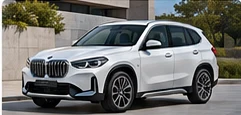

하나은행 오토론 · 최장 120개월
장기간 원금을 나누어 상환하는 방식입니다. 일반 상품 기준 최대 6,000만원까지 검토할 수 있으며, 실제 한도와 기간은 신용·소득·DSR 및 본 심사 결과에 따라 달라집니다.
- 1차 조회는 최종 승인이 아닙니다
- 장기할부는 총이자 증가 가능
- 중도상환 및 약정 조건 확인
 AG 천팀장 BMW AUTO FINANCE
AG 천팀장 BMW AUTO FINANCEBMW 신차 구입 시 하나은행 오토론 최장 120개월(10년)과 60개월 금융상품, BMW 스마트 유예할부를 비교합니다. 선수금·월 납입금·DSR·만기 상환계획까지 함께 살펴보세요.

BMW 5시리즈·X1·X3·X5·X6를 구매할 때는 금리뿐 아니라 차량가격, 선수금, 총이자, 월 납입금과 향후 주택담보·전세대출 계획도 중요합니다. 실제 조건은 금융사 심사 및 판매처 결제 방식에 따라 달라집니다.
장기간 원금을 나누어 상환하는 방식입니다. 일반 상품 기준 최대 6,000만원까지 검토할 수 있으며, 실제 한도와 기간은 신용·소득·DSR 및 본 심사 결과에 따라 달라집니다.
판매처의 카드 결제 허용 여부와 상품 자격을 먼저 확인합니다. 해당 비대출성 상품은 조건에 따라 DSR 산정 제외 및 중도상환수수료 없음의 특성을 확인할 수 있습니다.
일부 원금을 만기까지 남겨 월 납입금을 조절하는 방식입니다. 만기 유예금의 현금상환, 재할부 또는 차량 반납 선택지는 계약별로 다르며 신규 BMW파이낸셜 상품은 비교 안내만 제공합니다.
각 모델의 차량 가격과 옵션, 할인 조건이 달라 실제 필요 금융금액도 달라집니다. 아래 모델은 개별 승인이나 전액할부가 보장된다는 뜻이 아니라, 상담 시 검토할 대표 차종입니다.
AG 천팀장이 공개한 블로그 상담 자료를 바탕으로 차량대금과 금융 구조를 정리했습니다. 사진은 AI 생성 참고 이미지이며 실제 출고 차량이나 고객 사진이 아닙니다.

은행 최종 승인 5,000만원 중 실제 3,310만원을 이용하고, 48개월 자금 계획에 따라 유예할부를 함께 검토한 사례
은행 최종 승인과 부족 자금을 구분하여 조건부 병행 금융을 검토한 사례
은행 장기 분할상환과 부족금 보완 구조를 검토한 사례
1차 조회 6,000만원에서 최종 5,800만원 승인 후 부족금을 별도로 검토한 사례
1차 조회 5,000만원에서 최종 4,900만원 승인 후 부족금을 검토한 사례
※ 블로그 원문 기준 금액입니다. 승인 한도와 실제 이용액은 다를 수 있으며, 플랜B·스마트 유예할부 병행은 심사·약정·결제·중복 금융 제한 등을 충족해야 검토할 수 있습니다. 차량 이미지는 AI 생성 참고 이미지입니다.
차량 가격, 선수금, 월 납입 가능액, 향후 자금 유입 계획 확인
참고 한도 확인 후 소득·재직·기존 대출·DSR 본 심사 검토
은행 한도가 부족하면 별도 상품의 적격성·병행 가능성·총비용 확인
금융 실행 후 카매니저가 차량 등록, AG는 등록증을 받아 소유자·지분 확인
장기할부는 같은 금리·원금이라면 기간이 길수록 총이자가 커질 수 있습니다. 부분 중도상환 또는 3~5년 후 차량 교체 시 잔여 원금 정산으로 이후 이자 부담을 줄일 수 있으나 수수료 및 정산 조건은 약정별로 확인해야 합니다.
해당 상품의 대상 차량과 고객 신용·소득·DSR·본 심사 기준에 따라 최장 120개월을 검토할 수 있습니다. 개별 모델과 고객의 승인 여부는 사전 보장되지 않습니다.
아닙니다. 차량대금과 승인 한도, 판매처 결제 조건 및 추가 금융 심사에 따라 달라집니다. 은행 한도가 부족하면 조건부 플랜B를 검토할 수 있지만 승인·병행 실행은 보장되지 않습니다.
월 납입금뿐 아니라 적용 금리·총이자·중도상환 비용·차량 교체 시점과 개인 자금 계획을 함께 비교해야 합니다.
아닙니다. 만기 당시 신용·소득·기존 부채·금융회사 심사 기준에 따라 재할부가 거절되거나 조건이 달라질 수 있습니다.
윤길A·수정B 블로그의 최신 게시글을 발행일 기준으로 통합하여 최대 6건 자동 표시합니다. 차종 제한 없이 갱신됩니다.
최신 게시글을 불러오는 중입니다…
자동 갱신은 기존 BMW 홈페이지의 Cloudflare API 응답에 의존합니다. 로컬 파일에서는 브라우저의 보안 설정에 따라 표시가 제한될 수 있으며, 배포 후 확인이 필요합니다.
전체 블로그 후기 보기 ↗하나은행 오토론 120개월, 하나카드 AUTO할부 60개월, BMW 스마트 유예할부의 차이를 실제 상환계획에 맞춰 검토합니다. 심사 결과와 금리·한도는 보장되지 않습니다.